Configuration - Options du module
Dans l'administration du module, en cliquant sur le menu préférences, vous allez pouvoir procéder au paramétrage du comportement général de votre module de forums.
Les images
Les options ci-dessous proviennent des dossiers et fichiers qui sont présents
dans le répertoire /newbb/images/imagesets/
Chaque set d'images peut contenir des fichiers au format gif ou au format png, il vous est possible de créer un répertoire pour chaque langue utilisée dans votre site (english, french, deutch..)
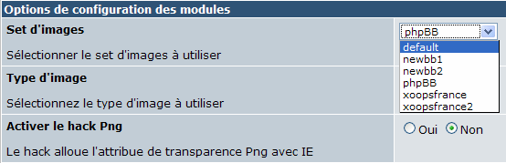
L'activation du hack png permet d'obtenir l'effet de transparence dans le navigateur Internet Explorer.
Options des formulaires
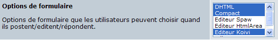
Les auteurs de cette nouvelle version ont cherché à intégrer d'autres éditeurs que celui de xoops, afin de faciliter la mise en forme des messages publiés. Si les options DHTML et comptact sont opérationnelles sans aucune modifications les autres nécessitent une installation particulière.
Lien sur la doc de Koivi
Upload de fichiers
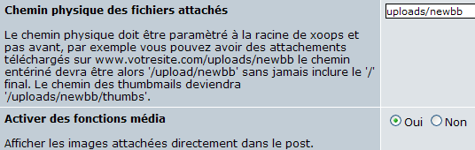
La possibilité d'attacher des fichiers à un message est une révolution par rapport aux versions précédentes de ce modules. Vérifier que le répertoire uploads/newbb existe bien avec le bon chmod. L'activation des fonctions média permet de visualiser directement dans le message le contenu du fichier. Les types de fichiers autorisés en uploads se déterminent dans les options propres à chaque forum.
Images
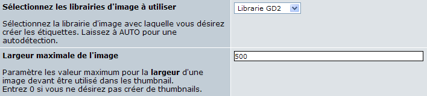
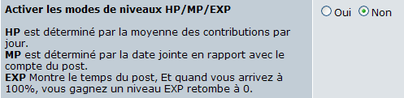
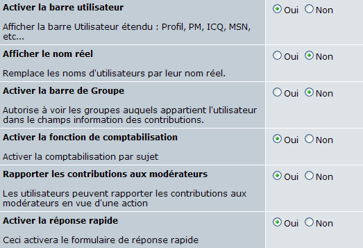
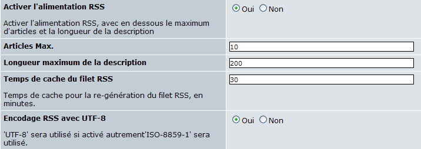

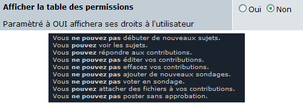
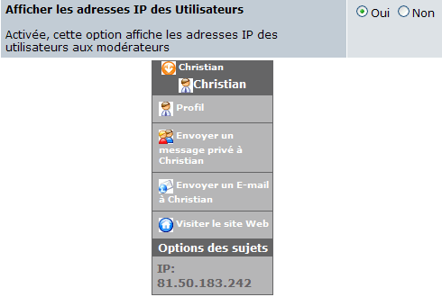
Ajouter un préfixe au sujet
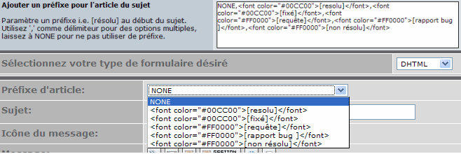
Les auteurs de posts, si on leur en donne la possibilité, peuvent préfixer leur question avec des mots clés préparés par les administrateurs. C'est par exemple le cas ici même avec les mentions NONE,[resolu],[fixé],[requête],[rapport bug ],[non résolu] que vous pouvez choisir lorsque vous créez un post. Cette fonction est très utile pour assurer une bonne réactivité de réponse sur les forums. En effet un post signalé par son auteur comme [resolu] n'est plus à relire pour proposer une réponse.
Mise en garde
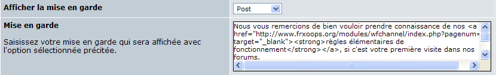
Vous pouvez afficher une mise en garde dans différentes situations : rédaction d'un nouveau message, lors d'une réponse, à chaque fois. Ce message d'avertissement sera affiché en haut de la page concernée.